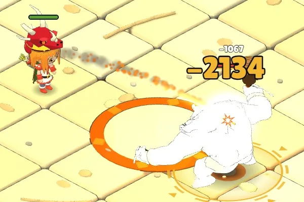
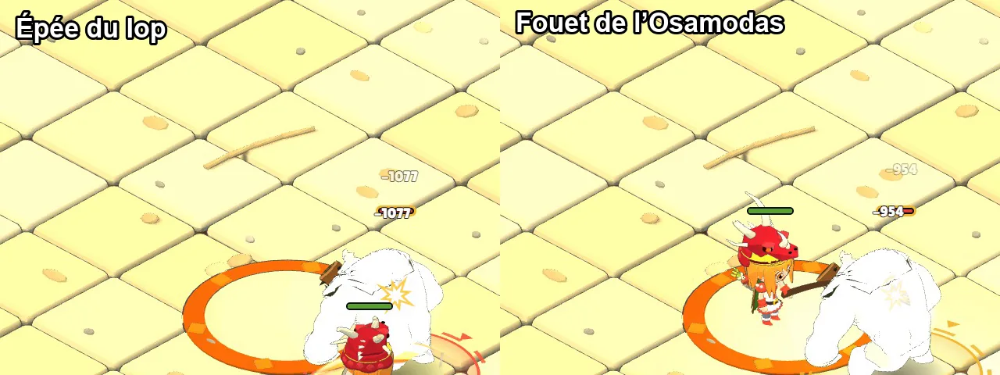
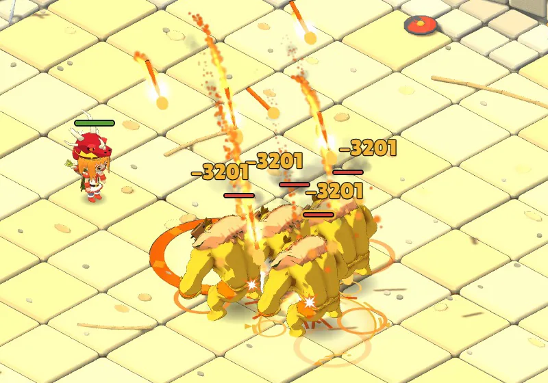

Dernière mise à jour25 novembre 2026
L'essentiel
- 🏹 La flèche du Cra se charge, file avec une traînée de lumière et reste plantée un instant dans le monstre.
- ⚔️ Sous l'épée du Iop comme sous le fouet de l'Osamodas, le monstre blanchit, s'écrase et réagit au coup ; le fouet claque dans un anneau de souffle.
- 🔥 Les Flèches enflammées du Cra refaites : explosion qui fend le sol, monstres qui brûlent, pluie de flèches incandescentes qui restent plantées en flammes.
- 🔊 Nouveaux sons d'impact, et les armes ne sonnent jamais deux fois pareil.


